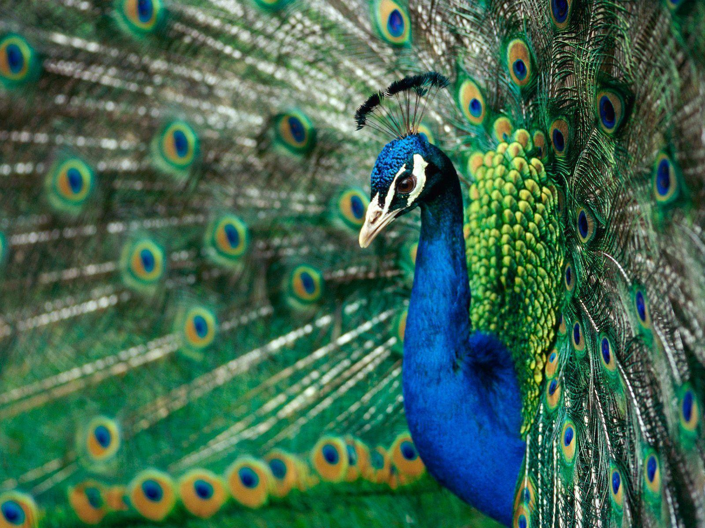

ABOUT PEACOCK
The peacock, also known as the Indian peafowl, is a large and colorful bird native to South Asia. It is famous for its stunning plumage, with long and iridescent blue-green feathers on its tail and bright blue feathers on its head and neck. Peacocks are often seen as a symbol of beauty, pride, and extravagance, and are a popular subject in art, literature, and culture. In addition to their stunning appearance, peacocks are also known for their distinctive mating displays, where they spread their feathers into a magnificent fan to attract a mate.

Here are some interesting facts about Peacock:
- Peacocks are the male members of the species, while the females are called peahens.
- The lifespan of a peafowl is around 15 years in the wild and up to 20 years in captivity.
- Peafowl are culturally significant in many parts of the world, including India, where they are the national bird and considered a symbol of beauty, grace, and pride.
- The bright and colorful feathers on a peacock are actually not its true feathers, but highly modified upper tail coverts.
Back to main page